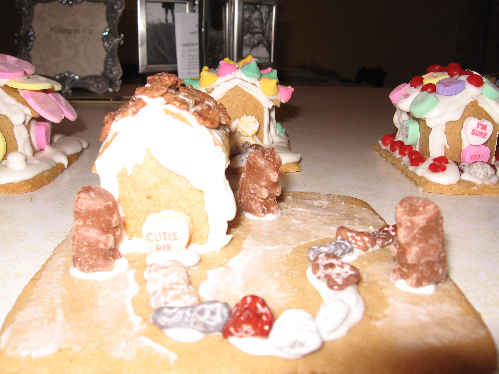
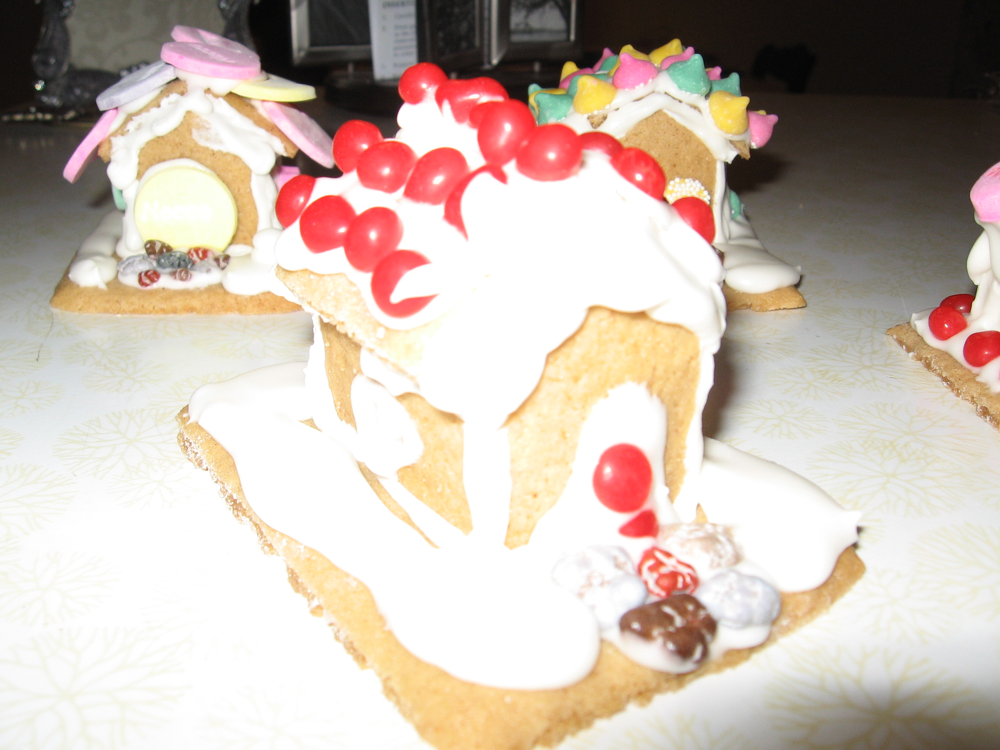
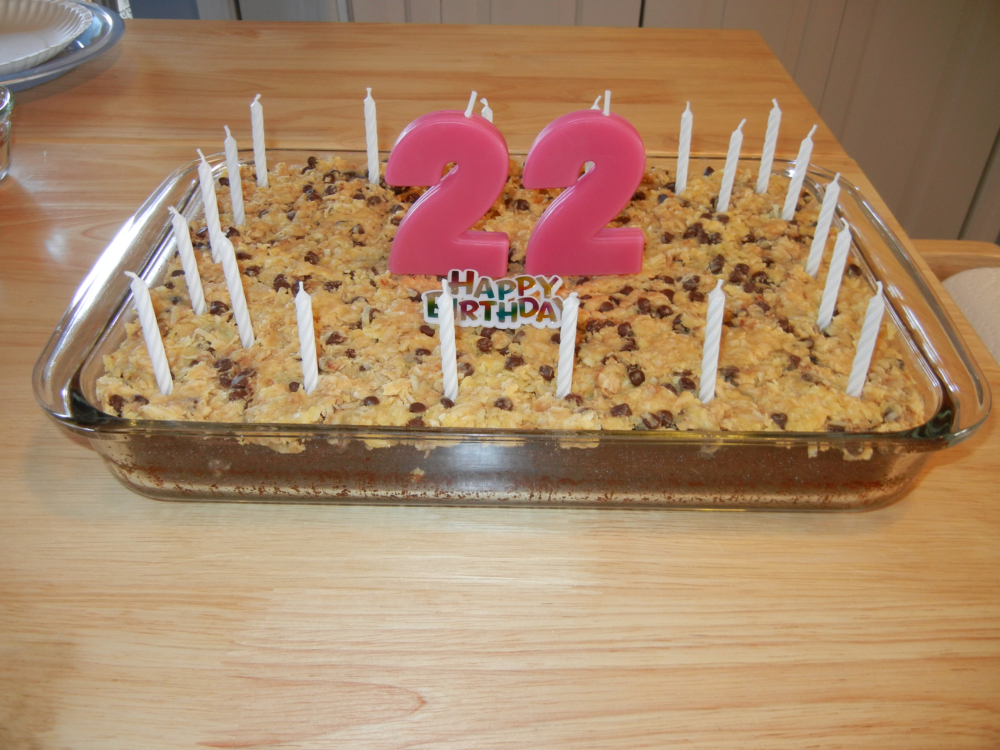
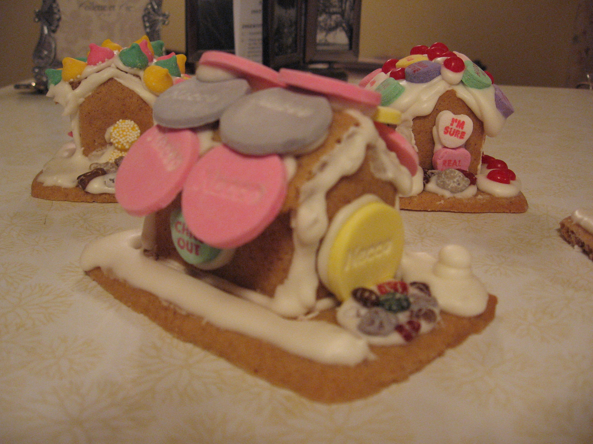
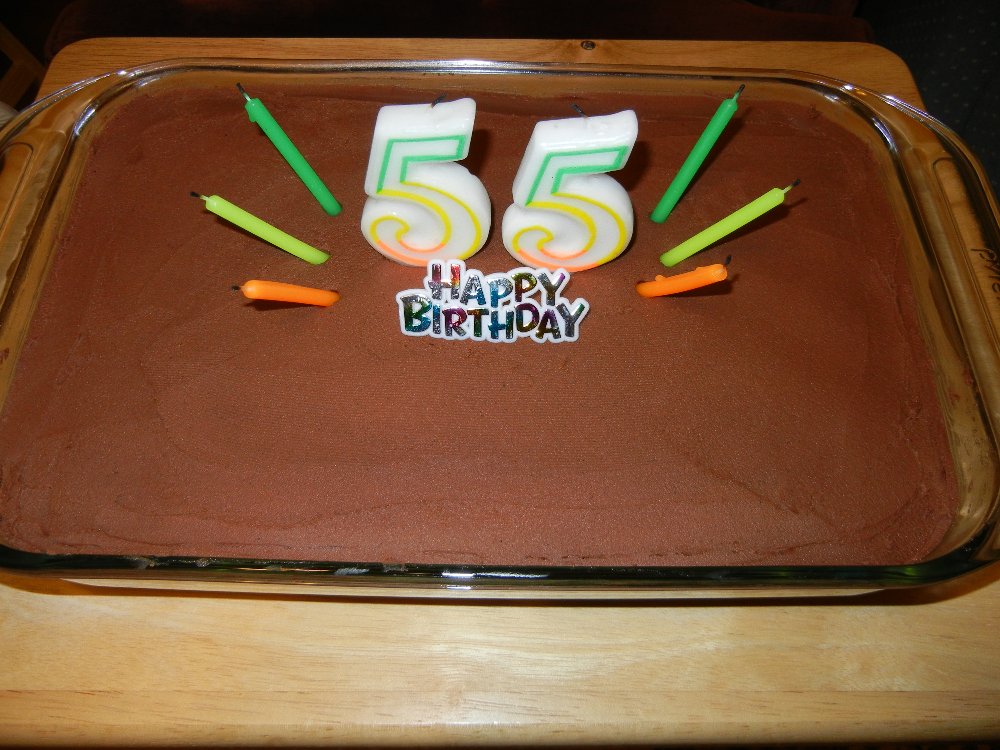
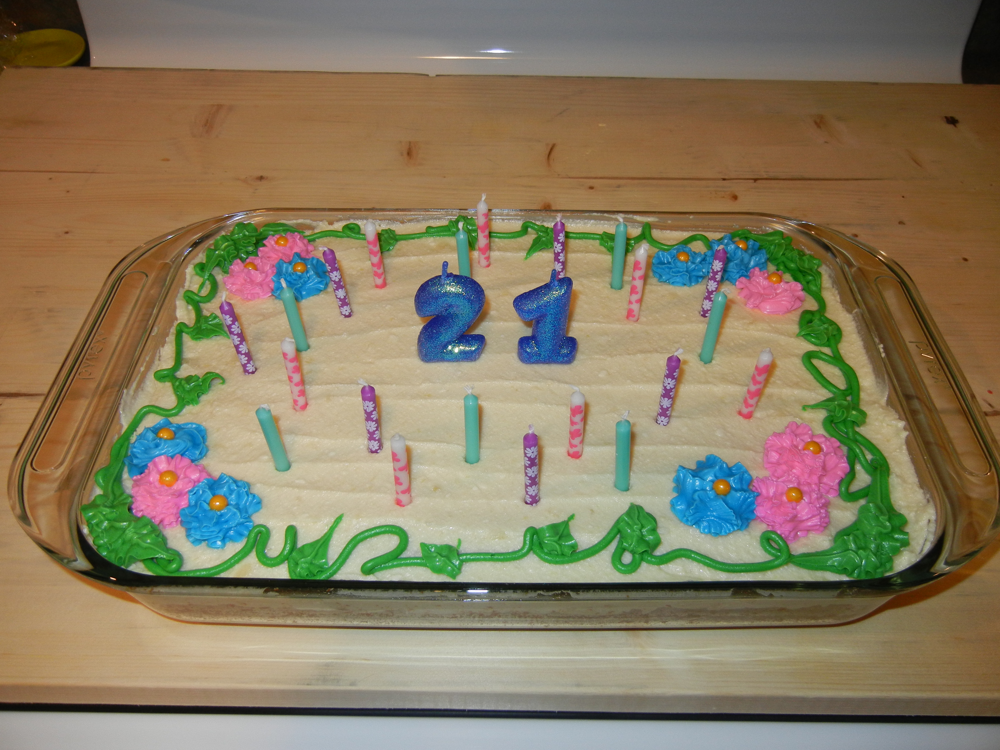

Amanda's Decorating History
My decorating history isn’t well documented—at least by pictures I could find on my family’s computer—until relatively recently. I know I’ve decorated cookies in various ways, although there are no pictures here. But I grew up with a mom who liked bringing deserts to get-togethers (and who had a family with a sweet tooth), so I helped decorate cookies, coat candy in chocolate, and bake.
When we would bring food to extended-family Thanksgiving and New Year’s Eve parties, our family would always request my mom’s chocolate and caramel-covered pretzels. These candies were made with thick, crispy, stick pretzels which were first covered in caramel that my mom made homemade (I watched her stir the caramel as it slowly reached the right temperature), and then coated in two layers of milk chocolate, melted from chocolate melts we bought at a store called Temptations. One end of each pretzel was left uncovered for a handle. These candies weren’t exactly decorated, but the smooth milk chocolate would leave a smooth, satiny surface on the candy. I helped put caramel on the sticks and dunk them in chocolate.
I also have decorated cookies, although it generally involved spreading frosting with a butter knife and sprinkling on colored sugar. That was fun because I would combine sugars of different colors on the same cookie, trying out several different combinations across cookies. My mom and I also made chocolate-dipped cookies once. I remember for Halloween one year I decorated a lot of bat-shaped cookies, but I can’t tell you whether they were any good because I don’t know where the pictures are…if I took any!
One of the decorating efforts I do have evidence of is the group of miniature gingerbread houses I decorated with candies when I must have been a young high-schooler. Not to say that I am particularly good with a camera now, but these pictures show that I’ve not only improved in decorating, but in my picture taking skills, since high school.
More recently, and what I have the most pictures of, I’ve been decorating our birthday cakes. For the most part, I haven’t done very elaborate jobs; I mostly tried to make the surface of the frosting look nice and arrange the candles. For my 21st birthday, though, I used special squeeze tubes of frosting with interchangeable tips to make a flowers, leaves, and stems design.
 